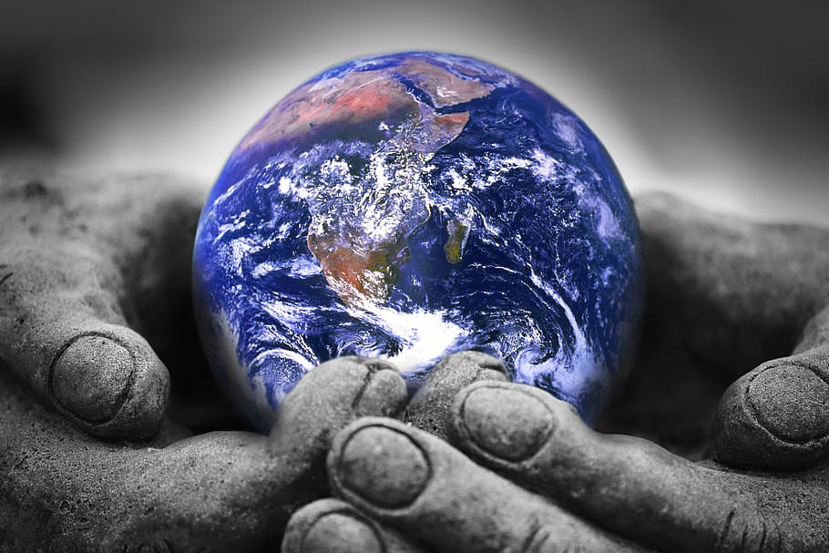

Earth has flowers and trees with butterfly also we live on earth. Something special about earth is that it has a solid and active surface with mountains, valleys, canyons, plains and so much more.

Key:
Blue: ocean
grean: grass
brown: earth's soil
Facts about earth
Most of earth is water than other plants
The Earth is the only planet in our solar system not to be named after a Greek or Roman deity.
Earthis the third planet and the only place in the known universe confirmed to host life.
With a radius of 3,959 miles, Earth is the fifth largest planet in our solar system, and it's the only one known for sure to have liquid water on its surface.li>